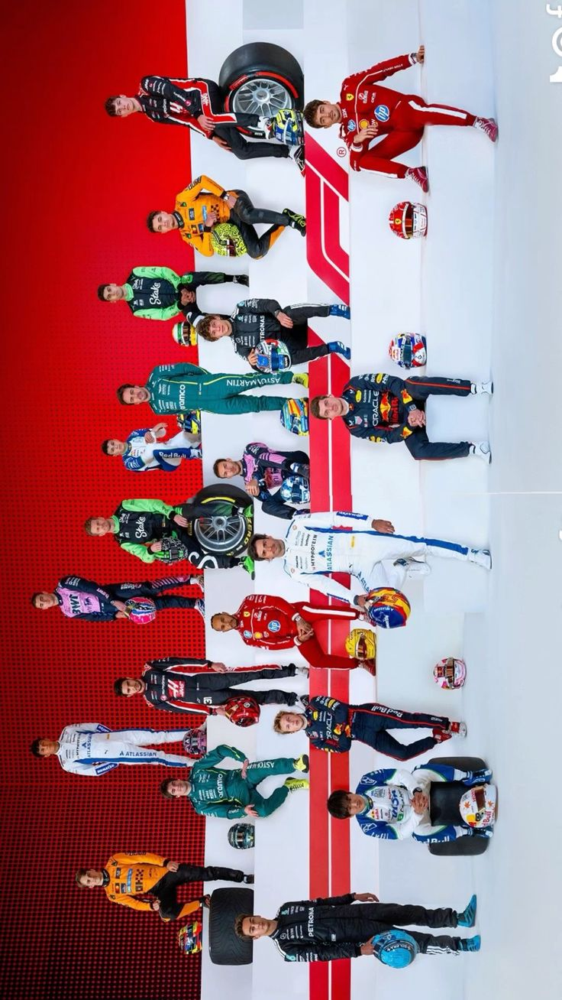
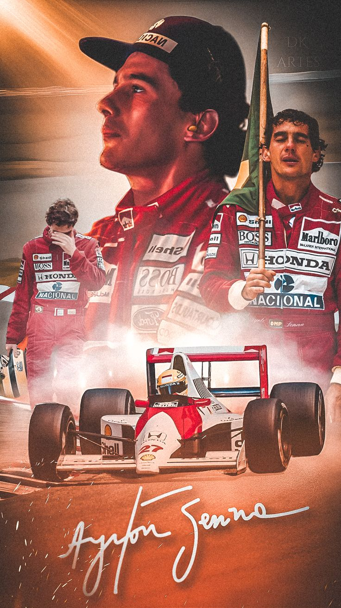

🏁 What is Formula 1? Formula 1, also known as F1, is the highest class of international single-seater auto racing. It's governed by the Fédération Internationale de l'Automobile (FIA). 🏎️ Key Features Cars: Extremely fast and technologically advanced. They can reach speeds over 350 km/h (217 mph). Races: Held on both dedicated race tracks (like Silverstone) and street circuits (like Monaco). Teams: Major teams include Red Bull Racing, Ferrari, Mercedes-AMG, McLaren, and Aston Martin. Drivers: Stars like Max Verstappen, Lewis Hamilton, Charles Leclerc, and Fernando Alonso. 🏆 How It Works The F1 season consists of a series of races known as Grands Prix (plural of Grand Prix), held around the world. Each race awards points to drivers and teams based on finishing positions. At the end of the season, two championships are awarded: Drivers’ Championship (best driver) Constructors’ Championship (best team) 🔧 Cool Facts F1 engines rev up to 15,000 RPM. Teams spend hundreds of millions developing the cars. F1 cars have hybrid power units, combining a V6 engine with electric systems. The pit stop can be done in under 2 seconds!
Ayrton Senna is one of the most legendary and beloved drivers in Formula 1 history — often regarded as one of the greatest racing drivers of all time.
🧑✈️ Who Was Ayrton Senna? 🇧🇷 Nationality: Brazilian 🗓 Born: March 21, 1960 ✝️ Died: May 1, 1994 (at age 34, during a race in Imola, Italy)
🏆 Career Highlights F1 World Champion: 🏆🏆🏆 Three times (1988, 1990, 1991) Race Wins: 41 Pole Positions: 65 (held the record for most poles until 2006) F1 Teams: Toleman (1984) Lotus (1985–1987) McLaren (1988–1993) Williams (1994)
🌟 What Made Him Special Incredible Speed: Especially in qualifying — he could drive one perfect lap better than anyone. Wet Weather Master: Unmatched control in the rain, earning him the nickname “Rain Master”. Charisma & Passion: Deeply emotional, religious, and fiercely competitive. Rivalry with Alain Prost: One of the fiercest and most famous rivalries in motorsport history.
🕊️ Tragic Death Senna died in a crash at the 1994 San Marino Grand Prix, while leading the race. A suspension failure caused his car to crash into a concrete wall at high speed. His death led to major safety reforms in F1.
💖 Legacy A national hero in Brazil — his funeral drew millions. Inspired a generation of drivers like Lewis Hamilton and Sebastian Vettel. The Ayrton Senna Foundation helps educate poor children in Brazil. Often remembered for his quote: “Being second is to be the first of the ones who lose.”
Michael Schumacher (born January 3, 1969, in Hürth near Cologne) is widely regarded as one of the greatest Formula1 drivers in history. Here’s an overview:
🏁 Racing Career & Records World Titles: Won seven World Drivers’ Championships (1994, ’95 with Benetton; 2000–04 with Ferrari) — a record later tied by Lewis Hamilton news.com.au +11 britannica.com +11 gpe.wikipedia.org +11 . ... (138 lines left) Collapse message.txt 9 KB 🏁 Racing Career & Records World Titles: Won seven World Drivers’ Championships (1994, ’95 with Benetton; 2000–04 with Ferrari) — a record later tied by Lewis Hamilton news.com.au +11 britannica.com +11 gpe.wikipedia.org +11 . Race Wins: Achieved 91 Grand Prix victories, as well as 155 podiums, 68 pole positions, and 77 fastest laps at his retirement formula1.com +6 britannica.com +6 sportbible.com +6 . Domination Era: During Ferrari's peak (2000–2004), Schumacher and the team dominated—he secured 11 wins in 2002 and major control over races racefans.net . Driving Style: Known for intense work ethic and sometimes controversial tactics (e.g., championship-deciding collisions in ’94 and ’97)
🧬 Early Life & Rise Grew up at his father’s kart track in Kerpen, Germany. His talent shone through early—winning German kart titles in 1984–87—leading to his move into F3 and eventually F1 britannica.com +1 formula1.com +1 . Made explosive F1 debut with Jordan in 1991, then joined Benetton where he won his first championship in 1994 and defended it in 1995
🌟 Accolades & Recognition Honored with numerous awards: honorary citizenship in Maranello, Spa, Sarajevo; Commander of the Order of Merit (Italy); Chevalier of the Légion d'honneur and more en.wikipedia.org +1 en.wikipedia.org +1 . Inducted into the FIA Hall of Fame in 2017
👨👩👧 Family Legacy Married to Corinna with two children (Mick and Gina-Maria). His son Mick is now racing in FIA WEC for Alpine Hypercar (2024–25) formula1.com +14 en.wikipedia.org +14 fr.wikipedia.org +14 . Recently became a grandfather after Gina’s marriage and pregnancy thesun.co.uk.
🎥 In Pop Culture A 2021 Netflix documentary titled “Schumacher” explores his life and career, featuring candid insights from family and F1 legends fr.wikipedia.org +3 en.wikipedia.org +3 thesun.co.uk +3 .
Formula 1 uses a variety of flags to communicate important information to drivers during sessions. These flags are essential for safety, regulation enforcement, and race control. Here's a list of the main F1 flags and their meanings:
🟩 Green Flag
Meaning: Track is clear, racing resumes
When Used: After a caution period (e.g., yellow flag), or at the start of a session/sector
🟨 Yellow Flag
Single Yellow: Danger ahead — drivers must slow down and overtaking is not allowed
Double Yellow: Greater danger — be prepared to stop if necessary
When Used: For accidents, debris, or stranded cars on track
🟥 Red Flag
Meaning: Session or race is stopped
When Used: Severe accident, track is blocked or unsafe due to weather or damage
⚫️ Black Flag
Meaning: Driver is disqualified from the session or race
When Used: For serious rule violations or unsafe conduct
⚫️⚪️ Black and White Flag (diagonal)
Meaning: Unsportsmanlike behavior; final warning
When Used: Track limits abuse, aggressive driving, weaving, etc.
Often called the "warning flag"
⚪️ White Flag
Meaning: Slow vehicle on track ahead
When Used: Medical car, safety car, or a driver with mechanical issues
⬛️🟡 Black Flag with Orange Circle ("Meatball Flag")
Meaning: Car has mechanical problem — driver must pit
When Used: For things like loose bodywork, smoke, or fluid leaks
🟩🟨 Yellow and Red Striped Flag
Meaning: Slippery track surface (e.g., oil, water, debris)
When Used: Warns drivers of low grip or changing conditions in that sector
🟦 Blue Flag
Meaning: Faster car approaching — move over to let them pass
When Used: Shown to lapped drivers or those being caught by front-runners
🏁 Checkered Flag
Meaning: End of session or race
When Used: Waved as the lead car crosses the finish line